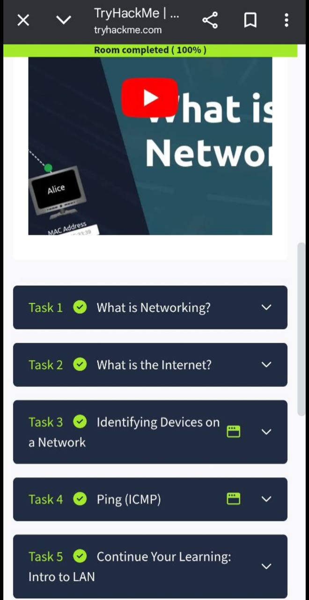
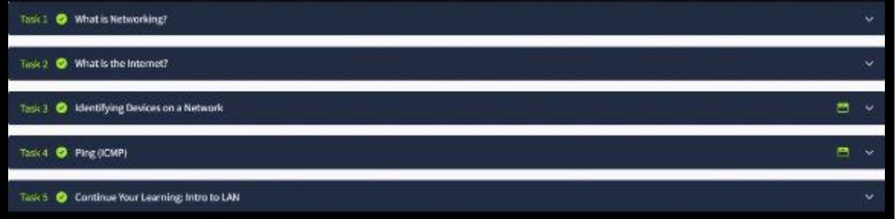

About Me
My name is Jerron Goh, and I am a student from Hillgrove Secondary School. My interest in technology began outside the classroom, where I took the initiative to complete online courses such as TryHackMe and the Cisco Networking Academy, which introduced me to the fundamentals of cybersecurity. These experiences sparked a strong passion for technology, especially in the areas of cybersecurity and programming. In my free time, I explored networking ethical hacking and I learnt more about red team blue team, which helped me better understand how cyber security works in real-world applications. I am particularly drawn to this field because of the growing importance of data and the need to protect digital systems in today’s connected world.
TryHackMe.com
I use TryHackMe.com to practice real-world cybersecurity labs. It has helped me explore topics like penetration testing, Linux fundamentals, and red team vs. blue team techniques.
Cisco Networking Academy
I completed introductory courses on networking and cybersecurity through Cisco Networking Academy. These helped me understand how networks operate and the importance of cyber hygiene.
Testimonial
Contact
Email: gohweihaojerron@gmail.com